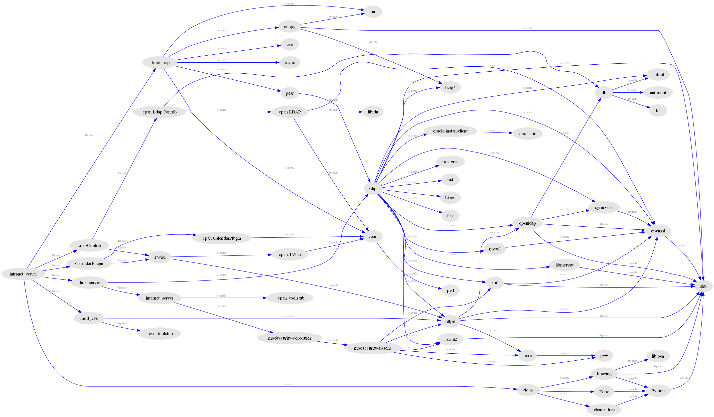

Building the LAMP stack with Phing
10/Apr 2015
A flashback to 2007 with a tangible artifact in my journey to infrastructure as code: building the LAMP stack with Phing.
Migration of Technology Stacks
I was the webmaster (Senior Producer, Web Team in the Information Technology department of Silicon Graphics: SGI) from 2005-2011, which is to say I designed and implemented improvements to web content, management, publishing, revision control, infrastructure, web programming, extranet design, application service provider integration and more.
I transitioned our server (and desktop) infrastructure from IRIX on MIPS architecture to SuSE Linux on Intel Itanium2 architecture, allowing folks to move to Windows laptops. It was not shocking to find many tools and packages were not ported to the new platform, Operating System distribution packages could lag behind in security releases or never receive upgrades, so I happily resorted to building from source and benefit from open source licensing.
Previously, during my independent consulting years, I had moved technology web stacks from SINO to LAMP:
- SINO: Solaris, Informix, Netscape, Oracle
- LAMP: Linux, Apache, MySQL/Postgres, PERL/PHP/Python
e.g.: From Netscape Enterprise Web Server to Apache, Informix and Oracle to MySQL, PERL to PHP, and I had been building this web stack on both Solaris and Linux.
Migration of Build Methods
I had an ever growing shell script to perform the package builds and I re-factored it for the release numbers and the deployment directory to be variable driven. Although my build script was a brittle monstrosity without any conditionally or intelligence, it was the right approach towards infrastructure as code!
My manager asked how I would document and share the build process for others at SGI to repurpose my work, so I consulted my colleagues and they suggested make files. I looked at make systems and liked Ant, an XML based build file, but to customize Ant required Java programming or beanshell (a la Groovy) scriptability which I explored. I really liked an Ant dependency graph generator that leveraged GraphViz called VizAnt.
Ultimately, I found an Ant implementation written in PHP called Phing (PHing Is Not GNU make) allowing me to reuse some Ant tools (a benefit of using XML as a data structure) and I have been happy with the solution.
I called the project “webplatform” and refactored my monolithic build shell script to Phing. Now I could:
- correct errors faster via Phing's XML validation
- share my work with others by using a centralized repository
- leverage build targets composed from the appropriate mix of software:
- Internet server: an optimized, reduced web stack
- DMZ server: minimal and secure web stack
- Intranet server: a kitchen sink (everything) configuration web stack
- respond in hours to incorporate any security patch directly from the software projects without waiting for the upstream operating system provider to back-port and distribute
- communicate my work because the code was documented and visualizable, e.g.:

I wrote one Phing extension called “MyUnpack.” Given any software package release version, it would:
- determine if a current or future release was already installed in the destination directory,
- optionally searching the operating system.
- utilizing a number of methods to determine the existing version because every project could be different.
- If not up to date, it would then extract the software package and signal to continue the build process. Otherwise, signal to skip building this up to date software package.
I practiced object oriented coding and adopted PHP Code Sniffer to improve my coding style. I was on the way to continuous integration… but I didn't finish that part of the project.
My contributions back to open source included documentation for Phing (I became a committer) and identifying, testing, and confirming a fix to broken OpenSSL builds on Itanium2.
I hope to open source the webplatform project one day.
SGI Appendix
Some fun challenges and SGI trivia:
-
http://sgi.com was one of the first web sites I ever saw with [NCSA Mosaic](http://en.wikipedia.org/wiki/Mosaic_(web_browser) on the web back in 1993. The banner of the home page of www.sgi.com was called “Silicon Surf” and displayed a metallic robot surfing on the ocean, which was also a reference to SGI's ground breaking graphic rendering, powering the earliest days of computer graphic imagery (CGI) in Hollywood, pioneered by Lucasfilm's Industrial Light and Magic (ILM) with SGI workstations: think Terminator 2. The act of browsing the world wide web was called “web surfing” in those early days and SGI nicknamed the web team the Surf Team.
-
I'll see if I can dig up that original image, I think I have the poster.
-
SGI engineering had created an in-house improved, centralized revision control system on top of RCS, one of the earliest, local file Unix revision control systems. It could be thought of a cousin and functional equivalent to CVS because it used RCS format files in the repository and allowed multiple users. However, it ran only on IRIX, which was SGI's flavor of Unix for the MIPS CPU family, and there was no road map to port it to Linux. Despite SGI already transitioning from IRIX to Linux, they had not decided to end of life IRIX at that time.
-
I was working to move us from SGI O2's (IRIX) on every web developer's desk to Linux or Windows laptops to modernize our tech stack, desktops, and tools. Some people stayed on IRIX and that was absolutely fine: our solution was based on open standards and transports.
-
After examining Mercurial, I moved our team to Subversion (svn) because it represented a straightforward migration without a major change in context for our web developers.